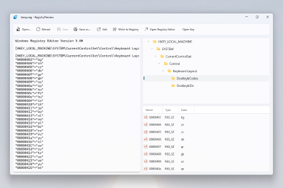

Registry Preview
Registry Preview is a PowerToys utility that helps you visualize and edit Windows Registry files before applying changes to your system. This tool provides a user-friendly interface to preview .reg files, explore registry keys in a tree structure, and safely write changes to the Windows Registry, making registry management more accessible for Windows power users.

Use Registry Preview to:
- View the contents of .reg files in a structured format
- Navigate registry keys and values through an interactive tree view
- Edit registry files with built-in text editing capabilities
- Safely apply changes to the Windows Registry with confirmation prompts
- Open specific registry locations directly in the Windows Registry Editor
This article explains how to enable, configure, and use Registry Preview to manage Windows Registry files effectively.
Getting started
Enable
To start using Registry Preview, enable it in the PowerToys Settings.
How to activate
Select one or more .reg files in Windows File Explorer. Right-click on the selected file(s) and select Preview to open Registry Preview. On Windows 11: select Show more options to expand the list of menu options. Registry Preview can also be opened from PowerToys Settings.
Note
There is currently a 10MB file limit for opening Windows Registry files with Registry Preview. The tool will display a message if a file contains invalid content.
Settings
There is a setting to make Registry Preview the default viewer for .reg files which is disabled by default.
How to use
After opening a Windows Registry file, the content is shown. This content can be updated at any time.
On the other side of the window, there is a visual tree representation of the registry keys listed in the file. This visual tree will be updated each time file content changes in the app.
Select a registry key in the visual tree to see the values of that registry key below it.
Select Edit to open the file in Notepad.
Select Reload to reload file content in case the file is changed outside of the Registry Preview.
Select Write to registry to save the data listed in the Preview to the Windows Registry. The Windows Registry Editor will ask for confirmation before writing data.
Select Open key to open the Windows Registry Editor with the location of the key you have highlighted in the treeview as the initial starting point.
Install PowerToys
This utility is part of the Microsoft PowerToys utilities for power users. It provides a set of useful utilities to tune and streamline your Windows experience for greater productivity. To install PowerToys, see Installing PowerToys.